Layanan Penerbitan SIM
Satpas Polresta Banyuwangi
Panduan lengkap persyaratan, prosedur, tarif resmi, hak pemohon, inovasi layanan, dan dasar hukum penerbitan Surat Izin Mengemudi.
👉 Cara membaca: Geser layar, gunakan tombol di bawah, atau tombol panah ← → pada keyboard untuk membalik halaman.
Kata Pengantar
Dari Satpas Polresta Banyuwangi untuk masyarakat.
Puji syukur kami panjatkan ke hadirat Tuhan Yang Maha Esa, karena atas rahmat dan karunia-Nya, Buku Digital Interaktif Layanan Penerbitan SIM Satpas Polresta Banyuwangi ini dapat disusun dan dihadirkan bagi masyarakat.
Buku ini disusun sebagai sarana informasi resmi yang mudah diakses oleh setiap pemohon SIM. Di dalamnya termuat persyaratan, prosedur, tarif resmi PNBP, hak dan kewajiban dalam pelayanan, inovasi layanan Satpas Polresta Banyuwangi — SINAR, SIM JEMPOL, LUPIS, dan SIBABA — serta dasar hukum penerbitan SIM sesuai Peraturan Kepolisian Nomor 5 Tahun 2021 jo. Peraturan Kepolisian Nomor 2 Tahun 2023. Buku ini dapat dibaca langsung melalui telepon genggam dengan memindai QR code, termasuk sambil menunggu proses pelayanan di Satpas.
Melalui buku ini, kami berharap masyarakat dapat memahami alur pelayanan dengan benar, menyiapkan dokumen secara lengkap sebelum datang, mengurus SIM secara mandiri, serta terhindar dari praktik calo dan pungutan liar. Hal ini sejalan dengan komitmen kami mewujudkan pelayanan publik yang profesional, transparan, dan akuntabel menuju Wilayah Bebas dari Korupsi (WBK) dan Wilayah Birokrasi Bersih dan Melayani (WBBM).
Kami menyampaikan terima kasih kepada pimpinan Polresta Banyuwangi dan Satuan Lalu Lintas Polresta Banyuwangi atas arahan dan dukungannya, kepada seluruh personel Satpas yang telah berkontribusi dalam penyusunan materi, kepada instansi mitra dan komunitas yang mendukung inovasi pelayanan kami, serta kepada masyarakat Banyuwangi atas kepercayaan dan partisipasinya.
Kami menyadari buku ini masih jauh dari sempurna. Oleh karena itu, kami sangat mengharapkan kritik dan saran dari masyarakat demi penyempurnaan buku dan peningkatan kualitas pelayanan kami, melalui saluran pengaduan resmi (B.10) atau WhatsApp 0852-3390-0100. Semoga buku ini bermanfaat bagi kita semua.
Daftar Isi
Klik judul untuk langsung menuju halaman yang diinginkan.
- Tombol Daftar Isi (kiri atas) menampilkan menu; tombol 🔍 Cari langsung mencari kata di seluruh halaman (mis. “perpanjangan”, “biaya”, “hilang”).
- Tombol 🔊 Dengarkan membacakan isi halaman dengan suara bawaan HP/browser, cocok bagi tunanetra (program SIBABA) dan lansia.
- Tombol Bagikan ke WhatsApp di atas setiap halaman mengirim tautan langsung ke halaman tersebut.
- Klik gambar poster untuk memperbesar; klik sekali lagi untuk zoom.
- Bagian bertanda INTERAKTIF berisi kalkulator, pengecek, dan kuis yang bisa dicoba langsung.
- Tombol A−/A+ mengatur ukuran huruf, tombol bulan mengganti tema terang/gelap, tombol Cetak mencetak/menyimpan seluruh buku sebagai PDF.
Rangkuman Pokok Pasal-Pasal Penting
Perpol No. 5 Tahun 2021 tentang Penerbitan dan Penandaan SIM beserta perubahannya dalam Perpol No. 2 Tahun 2023.
Perpol No. 5 Tahun 2021
Tentang Penerbitan dan Penandaan Surat Izin Mengemudi. Ditetapkan & diundangkan 19 Februari 2021 (BN RI 2021 No. 160). Terdiri atas 5 Bab dan 47 Pasal. Mencabut Perkap No. 9 Tahun 2012 tentang SIM.
Perpol No. 2 Tahun 2023
Perubahan atas Perpol 5/2021. Ditetapkan 8 Februari 2023, diundangkan 17 Februari 2023 (BN RI 2023 No. 160). Latar belakang: memastikan pemohon SIM menjadi peserta aktif program Jaminan Kesehatan Nasional.
Angka-angka kunci
Rangkuman per bagian
Ketentuan umum — istilah penting Pasal 1
- SIM: bukti legitimasi kompetensi pengemudi sesuai jenis & golongan, setelah memenuhi persyaratan administrasi, usia, kesehatan jasmani & rohani, serta lulus pengujian.
- SIM Internasional: SIM bagi WNI/WNA yang mengemudi di luar wilayah RI.
- Satpas: unsur pelaksana Polri bidang lalu lintas yang menyelenggarakan registrasi & identifikasi pengemudi. Satpas Pembantu bersifat statis di luar lingkungan Polri; Satpas Keliling bersifat dinamis dengan kendaraan.
- Keadaan Kahar: kejadian di luar kendali manusia (bencana, huru-hara, perang, dll.) yang dinyatakan pemerintah/instansi berwenang.
- Poin: nilai yang diberikan kepada pemilik SIM untuk setiap pelanggaran/kecelakaan lalu lintas; dicatat dalam SIPKLL Pemilik SIM.
- Baru 2023 E-AVIS (Elektronik Audio Visual Integrated System): sistem pengelolaan materi ujian teori SIM secara daring dan terpusat (angka 19).
Jenis, golongan & masa berlaku SIM Pasal 2–5
- Setiap pengemudi Ranmor di jalan wajib memiliki SIM sesuai jenis Ranmor; SIM diterbitkan Polri berbentuk kartu elektronik atau bentuk lain (Ps. 2).
- Jenis SIM: Ranmor Perseorangan, Ranmor Umum, dan Internasional; golongan A, A Umum, BI, BI Umum, BII, BII Umum, C, CI, CII, D, DI (Ps. 3). Perubahan 2023 setiap golongan termasuk Ranmor sejenis yang menggunakan daya listrik.
- SIM perseorangan & umum berlaku 5 tahun, SIM Internasional 3 tahun, dapat diperpanjang sebelum habis. Lewat masa berlaku → SIM baru, kecuali Keadaan Kahar (Ps. 4).
- SIM tidak berlaku bila habis masa berlaku atau dicabut oleh Satpas penerbit — misalnya data rusak/diubah tidak sah, diterbitkan tidak sah, putusan pengadilan, atau rekomendasi dokter/psikolog Polri (Ps. 5).
Jenis permohonan penerbitan SIM Pasal 6
Penerbitan SIM dilaksanakan berdasarkan permohonan untuk: (a) SIM baru, (b) perpanjangan, (c) peningkatan golongan, (d) penurunan golongan, (e) perubahan data pengemudi, (f) penggantian SIM hilang/rusak, (g) akibat pencabutan SIM atas putusan pengadilan.
Persyaratan: usia, administrasi, kesehatan, ujian Pasal 7–12
- Usia minimal (Ps. 8): 17 th (A, C, D, DI) · 18 th (CI) · 19 th (CII) · 20 th (A Umum, BI) · 21 th (BII) · 22 th (BI Umum) · 23 th (BII Umum).
- Administrasi (Ps. 9): formulir manual/bukti daftar elektronik; e-KTP (WNI) atau dokumen keimigrasian (WNA); sertifikat diklat mengemudi; izin kerja (WNA bekerja); perekaman biometrik; bukti bayar PNBP.
- Perubahan 2023 Ps. 9: sertifikat diklat cukup fotokopi dengan memperlihatkan aslinya; angka 3a surat hasil verifikasi kompetensi mengemudi bagi yang belajar sendiri; angka 5a bukti kepesertaan aktif JKN; ayat (3) huruf e–f melampirkan SIM lama untuk perpanjangan & SIM baru karena kedaluwarsa; ayat (3a)–(3c) masa berlaku sertifikat 6 bulan, perekaman data, dan kewajiban mengurus JKN sebelum SIM diserahkan.
- Kesehatan jasmani (Ps. 11): penglihatan, pendengaran, fisik — surat dokter berlaku 14 hari. 2023 hasil direkam di basis data SIM Korlantas.
- Kesehatan rohani (Ps. 12): kognitif, psikomotorik, kepribadian — surat lulus psikologi berlaku 6 bulan. 2023 rekomendasi psikolog oleh Biro Psikologi SSDM Polri; data direkam di basis data.
Ujian teori, simulator & praktik Pasal 13–19
| Ujian | Untuk permohonan | Kelulusan |
|---|---|---|
| Teori (Ps. 14–15) | SIM baru, peningkatan, pasca-pencabutan | Nilai ≥ 70; hasil langsung di monitor |
| Keterampilan via simulator (Ps. 16–17) | SIM baru (kecuali D/DI), perpanjangan A Umum/BI/BI Umum/BII/BII Umum, peningkatan, pasca-pencabutan | Nilai ≥ 70; surat keterangan berlaku 6 bulan |
| Praktik (Ps. 18–19) | SIM baru, peningkatan, pasca-pencabutan | Tidak melakukan kesalahan pada setiap materi |
- Bila simulator belum tersedia, kelulusan hanya berdasarkan ujian teori dan praktik (Ps. 13 ayat 2).
- Tidak lulus → ujian ulang paling banyak 2 kali dalam 14 hari kerja, terhitung 1 hari setelah dinyatakan tidak lulus.
- Perubahan 2023 Ujian teori menggunakan E-AVIS pada perangkat di Satpas atau gawai milik pemohon (Ps. 14 ayat 2). Materi dalam bahasa Indonesia (WNI) atau Inggris (WNA).
- Perubahan 2023 Ujian praktik di lapangan ujian di Satpas atau lokasi lain yang memenuhi standar Kakorlantas, dan ruas jalan tertentu; uji coba paling banyak 2 kali (Ps. 18).
Tata cara penerbitan & penandatanganan Pasal 20–29
SIM perseorangan/umum: pendaftaran → identifikasi → pencerahan & pengujian → pencetakan & penyerahan → pengarsipan. SIM Internasional: verifikasi → identifikasi & pencetakan → pengarsipan. Dilaksanakan oleh kelompok kerja pada Satpas. SIM ditandatangani elektronik oleh Kakorlantas (Mabes), Kapolda Metro Jaya, atau Kapolres (tingkat Polres).
Kedudukan & level Satpas Pasal 30–32
| Satpas | Golongan yang diterbitkan |
|---|---|
| Level I | D, DI, C, CI, A |
| Level II | D, DI, C, CI, A, A Umum |
| Level III & IV | D, DI, C, CI, CII, A, A Umum, BI, BI Umum, BII, BII Umum |
| Satpas Pembantu & Keliling | Perpanjangan D, DI, C, CI, CII, A |
Satpas wajib memasang papan informasi level & kewenangan di depan kantor (Ps. 31) dan memiliki kode Satpas yang tercantum pada SIM (Ps. 32). Penerbitan SIM Internasional berkedudukan di Korlantas Polri.
Penandaan SIM & sistem poin Pasal 33–44
- Polri berwenang memberi tanda/data pelanggaran pada SIM pengemudi yang melakukan pelanggaran atau kecelakaan lalu lintas (Ps. 33).
- Poin pelanggaran: 1, 3, atau 5; poin kecelakaan: 5, 10, atau 12 (Ps. 35–36).
- Akumulasi ≥ 12 poin = pinalti 1 (penahanan/pencabutan sementara SIM, wajib diklat mengemudi untuk mendapat SIM kembali); ≥ 18 poin = pinalti 2 (pencabutan SIM berdasarkan putusan pengadilan; setelah masa sanksi wajib diklat & prosedur SIM baru). Pemilik SIM berpinalti tidak dapat memperpanjang/mengganti SIM (Ps. 37–39).
- Data dicatat di pangkalan data penegakan hukum dan SIPKLL Pemilik SIM; pemilik dapat mengakses datanya secara terbatas (Ps. 40–44).
Pengendalian & pengawasan; penutup Pasal 45–47
Pengawasan oleh pengawas internal (pengemban fungsi pengawasan & pembina fungsi) dan eksternal (lembaga negara serta masyarakat melalui saluran pengaduan), melalui pembinaan, asistensi, supervisi, monitoring, serta analisis & evaluasi. Perkap 9/2012 dicabut; Perpol berlaku sejak diundangkan.
Ringkasan perubahan oleh Perpol No. 2 Tahun 2023
| Pasal | Sebelum (Perpol 5/2021) | Sesudah (Perpol 2/2023) |
|---|---|---|
| Ps. 1 | 18 definisi | Ditambah angka 19: E-AVIS |
| Ps. 3 (2) | Golongan SIM tanpa penegasan kendaraan listrik (kecuali CI & CII) | Semua golongan termasuk Ranmor bertenaga listrik |
| Ps. 9 (1) a | Sertifikat diklat asli dari sekolah terakreditasi, maks. 6 bulan | Fotokopi sertifikat + memperlihatkan asli; angka 3a verifikasi kompetensi bagi yang belajar sendiri; angka 5a bukti kepesertaan aktif JKN |
| Ps. 9 (3), (3a)–(3c) | Syarat tambahan huruf a–d | Tambah huruf e (perpanjangan: SIM lama) & f (SIM baru karena kedaluwarsa: SIM lama); sertifikat diklat maks. 6 bulan untuk peningkatan SIM umum & SIM perseorangan; data direkam; JKN diurus sebelum SIM diserahkan |
| Ps. 11 (5) | — | Hasil pemeriksaan jasmani direkam di basis data SIM Korlantas |
| Ps. 12 (2), (5) | Rekomendasi Biro Psikologi SSDM Polri atau Bagian Psikologi Biro SDM Polda | Rekomendasi Biro Psikologi SSDM Polri; data kesehatan rohani direkam di basis data |
| Ps. 14 (2) | Ujian teori elektronik oleh pemohon | Menggunakan E-AVIS pada perangkat Satpas atau gawai milik pemohon |
| Ps. 18 (3), (7) | Lapangan ujian praktik atau lokasi/ruas jalan tertentu | Lapangan ujian di Satpas atau lokasi lain sesuai standar Kakorlantas, dan ruas jalan tertentu |
| Ps. 25 (2) d | Menyerahkan SIM kepada pemohon | Menyerahkan SIM dan meminta bukti kepesertaan aktif JKN bila belum diserahkan |
Mekanisme & SOP Penerbitan SIM
Sesuai Perpol No. 5 Tahun 2021 jo. Perpol No. 2 Tahun 2023.
Dua komponen penerbitan SIM Pasal 6–7
1. Persyaratan
Usia · Administrasi · Kesehatan (jasmani & rohani) · Lulus ujian (teori, simulator, praktik).
2. Tata cara pelaksanaan
Pendaftaran · Identifikasi · Pencerahan & pengujian · Pencetakan & penyerahan · Pengarsipan.
Denah alur layanan, lantai 1
SOP rinci per tahap
- Pendaftaran — Pokja Pendaftaran (Ps. 22)Pemohon menyerahkan formulir/bukti daftar online beserta dokumen. Petugas memeriksa kelengkapan, menginput NIK/data keimigrasian, memverifikasi, lalu memberi tanda bukti pendaftaran. Dokumen lengkap diteruskan ke pengarsipan.
- Identifikasi — Pokja Identifikasi (Ps. 23)Verifikasi data pemohon; pengambilan foto, sidik jari, dan tanda tangan secara elektronik (biometrik).
- Pencerahan & ujian teori (Ps. 14–15, 24)Pencerahan: peraturan lalu lintas, teknis dasar Ranmor, cara mengemudi, tata cara berlalu lintas, kecelakaan. Ujian teori via E-AVIS; lulus bila nilai ≥ 70.
- Ujian keterampilan melalui simulator (Ps. 16–17)Dengan alat simulator atau simulasi virtual; lulus nilai ≥ 70 → surat keterangan uji keterampilan (berlaku 6 bulan).
- Ujian praktik (Ps. 18–19)Penjelasan tata cara & penilaian, uji coba maks. 2 kali, lalu ujian di lapangan/ruas jalan. Lulus bila tidak ada kesalahan pada setiap materi; hasil diumumkan langsung.
- Pembayaran PNBPPembayaran di loket BRI / BRIVA sesuai PP No. 76 Tahun 2020; bukti bayar diserahkan.
- Pencetakan & penyerahan — Pokja Cetak (Ps. 25)Verifikasi data, cetak SIM sesuai golongan, terima tanda bukti pendaftaran, serahkan SIM, dan minta bukti kepesertaan aktif JKN bila belum diserahkan.
- Pengarsipan — Pokja Arsip (Ps. 26)Penataan, penyimpanan, pemeliharaan, pemusnahan, dan penyajian arsip secara manual dan/atau elektronik.
Bila tidak lulus ujian
Persyaratan tambahan per jenis permohonan Pasal 9 ayat 3
| Permohonan | Lampiran tambahan |
|---|---|
| Perpanjangan | SIM lama |
| SIM baru karena kedaluwarsa | SIM lama |
| Perubahan data pengemudi | Penetapan pengadilan tentang perubahan identitas & SIM lama |
| Penggantian SIM hilang | Surat tanda penerimaan laporan kehilangan dari Polri |
| Penggantian SIM rusak | SIM lama yang rusak · panduan langkah demi langkah (B.6.1) |
| Akibat pencabutan oleh pengadilan | Putusan pengadilan; diajukan setelah larangan mengemudi berakhir |
Mako Satpas Polresta Banyuwangi
Markas Komando Satuan Penyelenggara Administrasi SIM, tempat seluruh layanan penerbitan SIM diselenggarakan.
Satpas (Satuan Penyelenggara Administrasi SIM) adalah unsur pelaksana Polri di bidang lalu lintas yang menyelenggarakan kegiatan registrasi dan identifikasi pengemudi Pasal 1 angka 9 Perpol 5/2021.
Satpas Polresta Banyuwangi berada di bawah Satuan Lalu Lintas (Satlantas) Polresta Banyuwangi, Polda Jawa Timur. SIM yang diterbitkan di tingkat Kepolisian Resor ditandatangani secara elektronik oleh Kepala Kepolisian Resor Pasal 21 ayat (1) huruf c.
📍 Alamat Satpas Polresta Banyuwangi
Sumberrejo, Kec. Banyuwangi, Kabupaten Banyuwangi, Jawa Timur 68419
Visi
Terwujudnya Satpas Polresta Banyuwangi yang Profesional, Modern, dan Transparan guna Memberikan Pelayanan Prima dan Mendukung Keamanan, Keselamatan, Ketertiban, dan Kelancaran Lalu Lintas (Kamseltibcarlantas) dalam rangka Meningkatkan Kepercayaan Masyarakat.
Misi
- Meningkatkan kualitas pelayanan publikyang cepat, mudah, dan akuntabel.
- Menyelenggarakan uji kompetensi pengemudisecara profesional dan objektif.
- Mengoptimalkan pemanfaatan teknologi informasiuntuk efisiensi dan kemudahan akses.
- Membangun sumber daya manusia (SDM)yang unggul dan berintegritas.
- Menyediakan sarana dan prasaranayang nyaman dan ramah bagi kelompok rentan.
Jadwal pelayanan
| Hari | Jam Operasional |
|---|---|
| Senin | 08.00 – 13.00 WIB |
| Selasa | 08.00 – 13.00 WIB |
| Rabu | 08.00 – 13.00 WIB |
| Kamis | 08.00 – 13.00 WIB |
| Jumat | 08.00 – 13.00 WIB |
| Sabtu | 08.00 – 13.00 WIB |
| Minggu | TUTUP |
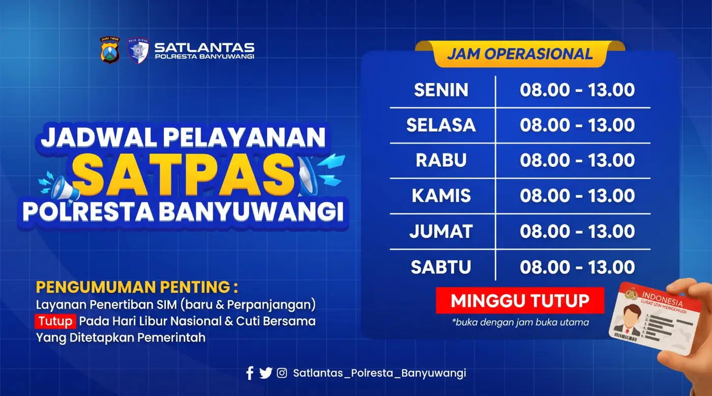
Layanan yang tersedia
SIM Baru
SIM A, C, CI, CII, D, DI dan golongan lainnya sesuai kewenangan Satpas.
Perpanjangan
Di Satpas, melalui SIM Keliling, atau online via aplikasi SINAR.
Peningkatan
SIM A Umum dan golongan SIM B (BI, BI Umum, BII, BII Umum).
Informasi & Pengaduan
Ruang pengaduan, kotak saran, WhatsApp, email, dan media sosial.
Stop Pungli, Hindari Calo!
Proses transparan, hati tenang, SIM di tangan.
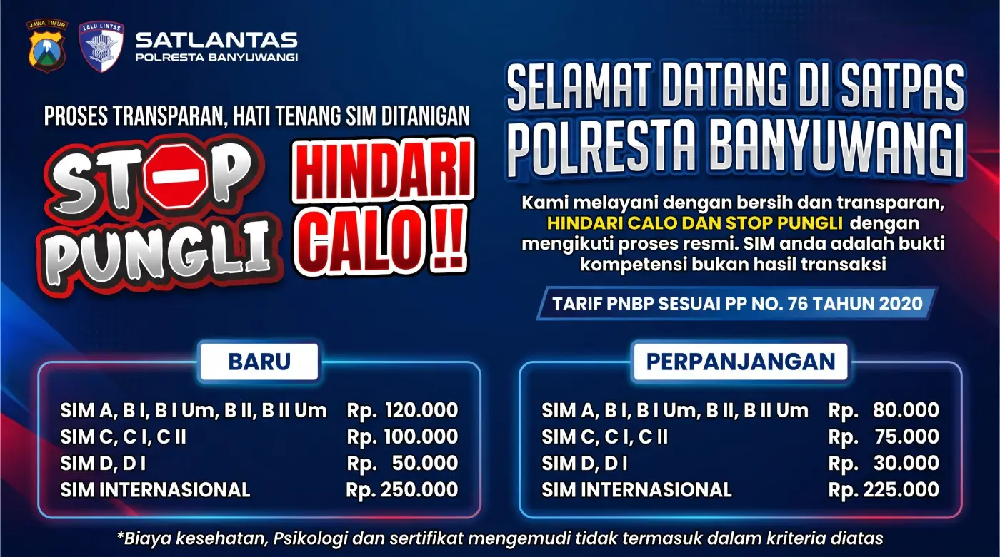
“Kami melayani dengan bersih dan transparan. Hindari calo dan stop pungli dengan mengikuti proses resmi. SIM Anda adalah bukti kompetensi, bukan hasil transaksi.”
Tarif resmi PNBP (PP No. 76 Tahun 2020)
| SIM Baru | Tarif |
|---|---|
| SIM A, BI, BI Umum, BII, BII Umum | Rp120.000 |
| SIM C, CI, CII | Rp100.000 |
| SIM D, DI | Rp50.000 |
| SIM Internasional | Rp250.000 |
| Perpanjangan | Tarif |
|---|---|
| SIM A, BI, BI Umum, BII, BII Umum | Rp80.000 |
| SIM C, CI, CII | Rp75.000 |
| SIM D, DI | Rp30.000 |
| SIM Internasional | Rp225.000 |
*Biaya kesehatan, psikologi, dan sertifikat mengemudi tidak termasuk dalam tarif di atas.
✔ Lakukan
- Urus sendiri melalui loket resmi.
- Bayar PNBP hanya di loket BRI / BRIVA dan simpan bukti bayar.
- Tanyakan ke Unit Informasi bila ragu.
✘ Hindari
- Menggunakan jasa calo/perantara.
- Memberi uang “pelicin” kepada siapa pun.
- Membayar di luar tarif resmi tanpa bukti.
⚑ Laporkan
Temukan pungutan liar? Sampaikan melalui saluran resmi pengaduan. Lihat B.10 Sarana Pengaduan →
Maklumat Pelayanan SIM
Janji layanan Satlantas Polresta Banyuwangi kepada masyarakat.
Dengan ini menyatakan sanggup menyelenggarakan pelayanan sesuai standar pelayanan yang telah ditetapkan, dan apabila tidak menepati janji ini kami siap menerima sanksi sesuai peraturan perundang-undangan yang berlaku. Di samping itu kami akan memberikan kompensasi bila pelayanan kami tidak sesuai standar pelayanan, dan kami akan terus melakukan perbaikan terus-menerus.
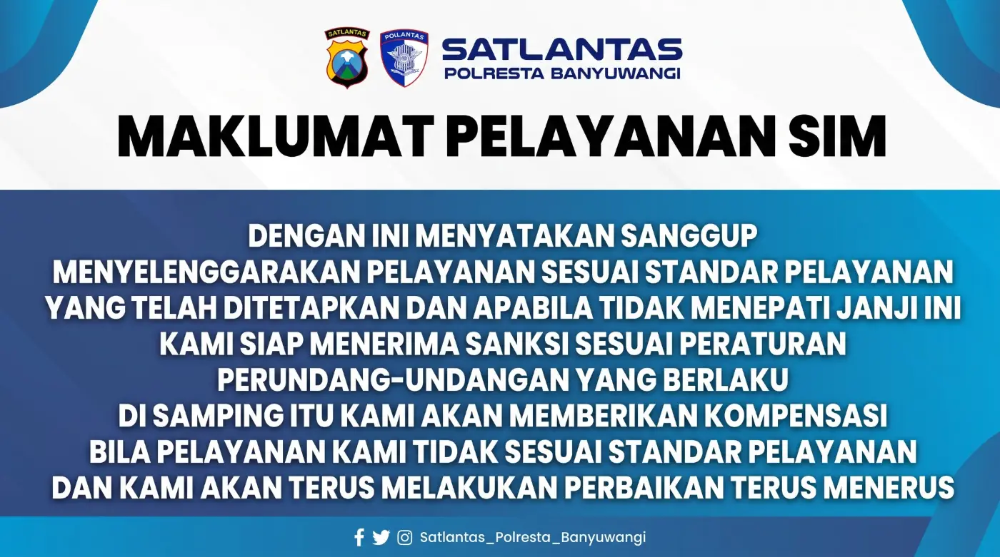
Empat janji utama
Kode Etik Pelayanan SIM
Komitmen pelayanan yang cepat, tepat, transparan, dan akuntabel.
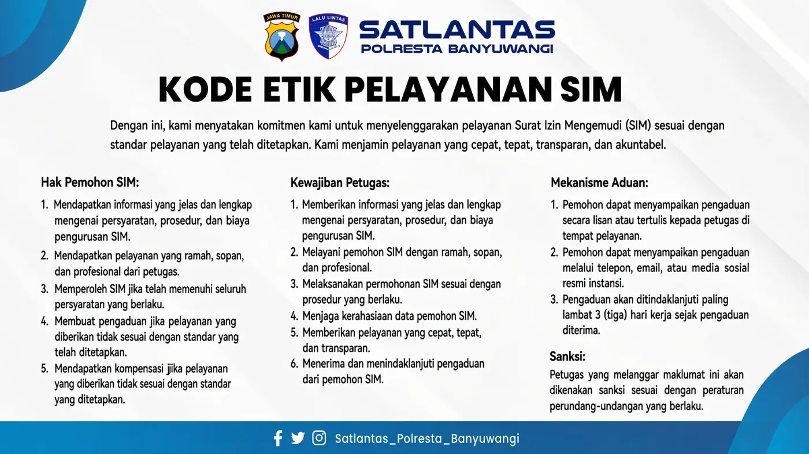
Hak Pemohon SIM
- Mendapat informasi jelas & lengkap tentang persyaratan, prosedur, dan biaya.
- Mendapat pelayanan ramah, sopan, dan profesional.
- Memperoleh SIM jika telah memenuhi seluruh persyaratan.
- Membuat pengaduan jika layanan tidak sesuai standar.
- Mendapat kompensasi jika layanan tidak sesuai standar.
Kewajiban Petugas
- Memberi informasi jelas & lengkap tentang persyaratan, prosedur, dan biaya.
- Melayani dengan ramah, sopan, dan profesional.
- Melaksanakan permohonan sesuai prosedur.
- Menjaga kerahasiaan data pemohon.
- Memberi layanan cepat, tepat, dan transparan.
- Menerima dan menindaklanjuti pengaduan.
Mekanisme Aduan
- Lisan atau tertulis kepada petugas di tempat pelayanan.
- Melalui telepon, email, atau media sosial resmi.
- Ditindaklanjuti paling lambat 3 hari kerja sejak diterima.
Sanksi
Petugas yang melanggar maklumat dikenakan sanksi sesuai peraturan perundang-undangan.
Permohonan SIM Baru
SIM A, SIM B, SIM C, dan SIM D — standar pelayanan sesuai Perpol 5/2021 jo. Perpol 2/2023.
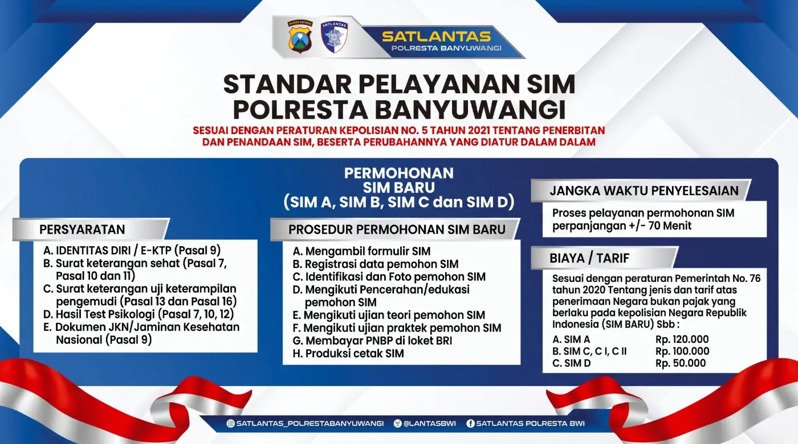
Persyaratan
- Identitas diri / e-KTPPasal 9
- Surat keterangan sehatPasal 7, Pasal 10, dan Pasal 11
- Surat keterangan uji keterampilan pengemudiPasal 13 dan Pasal 16
- Hasil tes psikologiPasal 7, 10, 12
- Dokumen JKN / Jaminan Kesehatan NasionalPasal 9
Prosedur permohonan
Tahapan uji teori E-AVIS
E-AVIS (Electronic Audiovisual Integrated System) — ujian teori berbasis komputer/gawai yang terdiri atas 3 tahap.
1. Persepsi Bahaya
25 soal · Waktu 10 menit
Menguji kemampuan pengemudi mengidentifikasi potensi dan ancaman gangguan lalu lintas, serta bereaksi dengan tepat.
2. Wawasan
20 soal · Waktu 20 menit
Menguji kompetensi dan pengalaman pengemudi dalam menempatkan/menyesuaikan diri saat berkendara di jalan guna mendukung kamseltibcarlantas.
3. Pengetahuan
20 soal · Waktu 20 menit
Menguji pemahaman pengemudi tentang dasar dan norma hukum lalu lintas yang berlaku.
Nilai lulus ujian teori paling rendah 70 (Pasal 15 ayat 1). E-AVIS dapat dikerjakan pada perangkat di Satpas atau gawai milik pemohon (Pasal 14 ayat 2 Perpol 2/2023).
Biaya / tarif SIM baru
| Golongan | Tarif PNBP |
|---|---|
| SIM A | Rp120.000 |
| SIM C, CI, CII | Rp100.000 |
| SIM D | Rp50.000 |
- Usia minimal 17 tahun untuk SIM A, C, D, DI; 18 tahun SIM CI; 19 tahun SIM CII Pasal 8. Cek usia Anda →
- Melampirkan sertifikat diklat mengemudi (memperlihatkan aslinya), atau surat hasil verifikasi kompetensi mengemudi dari sekolah mengemudi terakreditasi bagi yang belajar sendiri Pasal 9 (1) a angka 3 & 3a.
- Lulus ujian teori (nilai ≥ 70, via E-AVIS), ujian keterampilan melalui simulator (nilai ≥ 70, kecuali SIM D/DI), dan ujian praktik (tanpa kesalahan). Kesempatan mengulang paling banyak 2 kali dalam 14 hari kerja Pasal 15–19.
- Bila tidak lulus ujian atau membatalkan sebelum tahap pengujian, pemohon diberi surat keterangan pengembalian PNBP Pasal 22 (2) h.
E-Book Ujian Teori & Praktik
Manfaatkan waktu tunggu Anda dengan belajar — persiapan sebelum ujian teori dan praktik SIM.
Yuk, persiapan dulu di sini!
Jangan tunggu gagal — pelajari materinya sambil menunggu. Satpas Polresta Banyuwangi menyediakan E-Book kumpulan soal ujian teori dan video tutorial ujian praktik untuk sepeda motor (R2) dan mobil (R4).
Materi belajar yang tersedia
Ketuk tombol untuk membuka langsung. Bila membaca dari laptop/komputer, pindai QR code dengan kamera HP.
E-Book Kumpulan Soal Ujian Teori SIM
e-Book kumpulan soal ujian teori SIM Polda Jatim 2025 (PDF, Google Drive).
Video Materi Ujian Teori SIM C
Materi ujian teori SIM C beserta contoh soal dan jawaban (YouTube).
Video Tutorial Ujian Praktik R2 (SIM C)
Tutorial uji praktik SIM C tahap 1 — kanal YouTube Satlantas Banyuwangi.
Video Tutorial Ujian Praktik R4 (SIM A)
Tutorial uji praktik roda 4/mobil — kanal YouTube Satlantas Banyuwangi.
Rangkuman materi ujian teori
⚠️ Persepsi Bahaya
25 soal · 10 menit. Mengenali potensi bahaya lalu lintas dan bereaksi dengan tepat.
💡 Wawasan
20 soal · 20 menit. Menyesuaikan diri saat berkendara demi kamseltibcarlantas.
🎓 Pengetahuan
20 soal · 20 menit. Dasar dan norma hukum lalu lintas yang berlaku.
- Pelajari arti rambu, marka, dan APILL (lampu lalu lintas), hak utama pengguna jalan, etika mendahului, dan batas kecepatan.
- Kerjakan latihan soal di E-Book berulang kali sampai terbiasa dengan pola soalnya.
- Nilai lulus paling rendah 70. Ujian dapat dikerjakan di perangkat Satpas atau HP pemohon melalui E-AVIS. Lihat tahapan E-AVIS (B.5) →
Belajar rambu untuk ujian teori? Buka Galeri Rambu, Marka & APILL + kuis tebak rambu (B.5.2) →
Lapangan uji praktik
Sirkuit huruf S: uji praktik SIM C sejak Agustus 2023
Sejak Agustus 2023, Korlantas Polri mengganti lintasan angka 8 dan zig-zag pada ujian praktik SIM C dengan satu sirkuit tak terputus berbentuk huruf S. Desainnya dimuat dalam lampiran Kep/105/VIII/2023 (“Disain Sirkuit Uji Praktek R2 Baru”). Peserta melintasi empat materi secara berurutan.
✅ Ketentuan lulus uji praktik SIM C
- Tidak menyentuh satu pun patok/sensor elektronik.
- Kaki tidak diangkat dari pijakan (footstep) saat kendaraan berjalan.
- Saat berhenti dan akan berjalan: turunkan kaki kiri dan tengok ke kanan belakang untuk konfirmasi keselamatan.
- Menyelesaikan seluruh materi. Peserta yang lulus mendapat tanda bukti untuk uji di ruas jalan tertentu.
📰 Penerapan di lapangan
- Diperkenalkan Kakorlantas di Satpas Daan Mogot, Jakarta, 4 Agustus 2023, dan diberlakukan di Satpas seluruh Indonesia mulai awal Agustus 2023.
- Lintasan dibuat lebih lebar sehingga lebih mudah tanpa mengurangi aspek keselamatan.
- Menurut lampiran Kep/105, uji SIM D tetap memakai pengereman, slalom/zig-zag, dan rem menghindar.
- Sumber: detikOto, detikJogja, Kompas TV, GNFI.
Sebelum ujian (pencerahan): periksa fungsi kemudi, rem tangan & kaki, transmisi, kopling, oli, busi, spion, lampu, bahan bakar, kondisi & tekanan ban, dan klakson. Pakai helm SNI (SIM C) atau sabuk keselamatan (SIM A). Lulus bila tidak melakukan kesalahan pada setiap materi (Pasal 19 ayat 2 Perpol 5/2021).
😊 Jika gagal, jangan khawatir!
Ada kesempatan mengulang (paling banyak 2 kali dalam 14 hari kerja) dengan bimbingan langsung dari petugas kami.
🤝 Belum lulus juga?
Tim Penguji kami siap memberikan panduan khusus untuk kesempatan Anda berikutnya — ikuti latihan gratis LUPIS (B.14).
Galeri Rambu, Marka & APILL
Materi inti ujian teori SIM: kenali bentuk, warna, dan arti rambu, lalu uji diri dengan kuis tebak rambu.
Kuis tebak rambu
Permohonan SIM Perpanjangan
SIM A, SIM B, SIM C, dan SIM D — perpanjang sebelum masa berlaku habis.
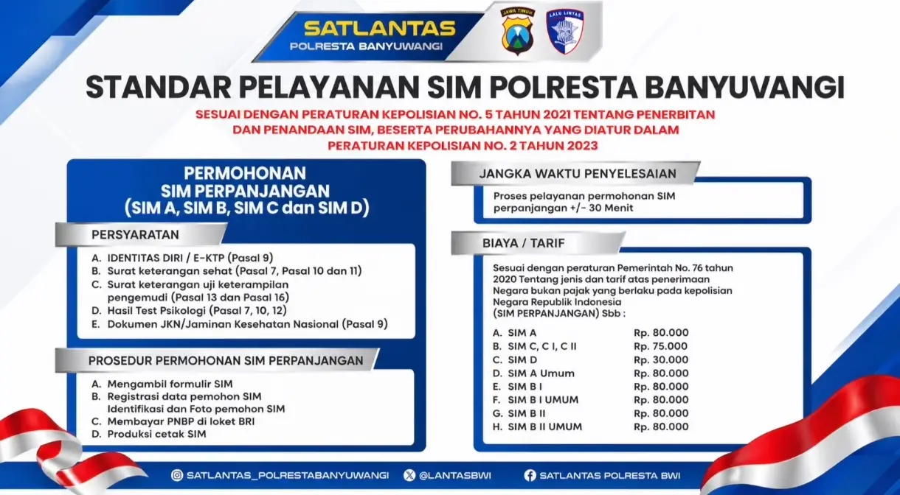
Persyaratan
- Identitas diri / e-KTPPasal 9
- Surat keterangan sehatPasal 7, Pasal 10 dan 11
- Surat keterangan uji keterampilan pengemudiPasal 13 dan 16 — khusus perpanjangan SIM A Umum, BI, BI Umum, BII, BII Umum (Pasal 16 ayat 1 huruf b)
- Hasil tes psikologiPasal 7, 10, 12
- Dokumen JKN / Jaminan Kesehatan NasionalPasal 9
Prosedur permohonan
Huruf mengikuti penanda ruangan pada denah lantai 1. Dari ruang B ke ruang H, ikuti koridor tengah melewati Ruang Pencerahan (D) dan area F, lalu belok ke koridor belakang. Lihat rute di denah alur A.2 →
Biaya / tarif perpanjangan
| Golongan | Tarif PNBP |
|---|---|
| SIM A | Rp80.000 |
| SIM C, CI, CII | Rp75.000 |
| SIM D | Rp30.000 |
| SIM A Umum | Rp80.000 |
| SIM BI | Rp80.000 |
| SIM BI Umum | Rp80.000 |
| SIM BII | Rp80.000 |
| SIM BII Umum | Rp80.000 |
- SIM diperpanjang sebelum habis masa berlakunya Pasal 4 ayat 1. SIM yang lewat masa berlaku wajib mengajukan SIM baru Pasal 4 ayat 3, kecuali karena Keadaan Kahar Pasal 4 ayat 4.
- Lampirkan SIM lama Pasal 9 (3) e — Perpol 2/2023.
- Pemilik SIM yang terkena pinalti poin pelanggaran tidak dapat memperpanjang SIM Pasal 37 ayat 4.
- Masa berlaku SIM habis pada hari Minggu / libur nasional? Lihat B.8 →
- SIM hilang atau rusak? Ikuti panduan B.6.1 →
SIM Keliling (Simling)
Perpanjangan SIM A/C menggunakan bus khusus — lihat SIM JEMPOL (B.13). Satpas Keliling/Pembantu melayani perpanjangan SIM D, DI, C, CI, CII, dan A Pasal 30 ayat 7.
SINAR (online)
Perpanjangan SIM secara online melalui aplikasi Korlantas Polri “SINAR”. Bantuan WhatsApp: 0816-255-705. Panduan SINAR (B.12) →
Penggantian SIM Hilang atau Rusak
Panduan langkah demi langkah, dari lapor kehilangan sampai SIM pengganti di tangan.
Dokumen yang perlu dibawa
| Dokumen | Hilang | Rusak |
|---|---|---|
| e-KTP asli + fotokopi | ✔ | ✔ |
| Surat tanda penerimaan laporan kehilangan dari Polri (SPKT) | ✔ | — |
| SIM lama yang rusak | — | ✔ |
| Fotokopi SIM lama (bila masih ada) | dianjurkan | — |
| Surat keterangan sehat jasmani (E-Rikkes) | ✔ | ✔ |
| Surat keterangan lulus tes psikologi (E-PPSI) | ✔ | ✔ |
| Bukti kepesertaan aktif JKN/BPJS Kesehatan | ✔ | ✔ |
- Dasar hukum: permohonan penggantian SIM hilang/rusak Pasal 6 ayat 3 huruf f; lampiran surat laporan kehilangan atau SIM rusak Pasal 9 ayat 3 huruf b–c.
- Tahapan: pendaftaran, identifikasi, pembayaran PNBP, pencetakan. Tidak ada ujian teori & praktik selama data SIM tercatat dan masih berlaku (lihat tabel tahapan di A.2).
- SIM yang hilang dan masa berlakunya sudah habis harus diajukan sebagai SIM baru, termasuk ujian Pasal 4 ayat 3.
- PNBP penggantian mengikuti tarif perpanjangan golongan SIM (mis. SIM A Rp80.000, SIM C Rp75.000; PP No. 76 Tahun 2020). Pastikan kembali di meja Informasi Satpas.
- Surat keterangan kehilangan dari SPKT gratis. Tolak bila diminta biaya.
Permohonan SIM Peningkatan
SIM A Umum & golongan SIM B — naik golongan setelah memenuhi masa kepemilikan.
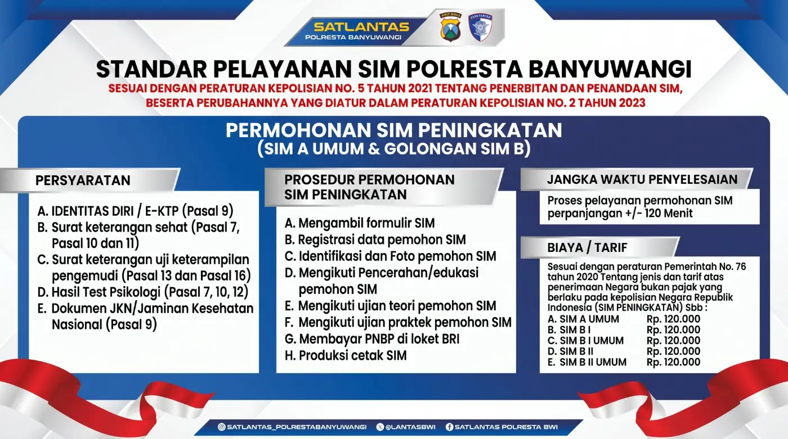
Persyaratan
- Identitas diri / e-KTPPasal 9
- Surat keterangan sehatPasal 7, Pasal 10 dan 11
- Surat keterangan uji keterampilan pengemudiPasal 13 dan Pasal 16
- Hasil tes psikologiPasal 7, 10, 12
- Dokumen JKN / Jaminan Kesehatan NasionalPasal 9
Prosedur permohonan
Biaya / tarif peningkatan
| Golongan | Syarat kepemilikan SIM sebelumnya (≥ 12 bulan) | Usia min. | Tarif |
|---|---|---|---|
| SIM A Umum | SIM A | 20 th | Rp120.000 |
| SIM BI | SIM A atau SIM A Umum | 20 th | Rp120.000 |
| SIM BI Umum | SIM A Umum atau SIM BI | 22 th | Rp120.000 |
| SIM BII | SIM BI | 21 th | Rp120.000 |
| SIM BII Umum | SIM BI Umum atau SIM BII | 23 th | Rp120.000 |
- Syarat kepemilikan SIM sebelumnya selama 12 bulan diatur dalam Pasal 3 ayat 3–9; usia minimal dalam Pasal 8.
- Pemohon peningkatan SIM Ranmor Umum melampirkan sertifikat diklat mengemudi dari sekolah mengemudi terakreditasi, berlaku paling lama 6 bulan sejak diterbitkan Pasal 9 ayat 3a — Perpol 2/2023.
- Wajib mengikuti ujian teori, ujian keterampilan melalui simulator, dan ujian praktik Pasal 14, 16, 18.
- Peningkatan C → CI → CII juga dimungkinkan Pasal 6 ayat 4. Lihat tangga golongan SIM →
Info Pelayanan Hari Minggu & Libur Nasional
Dispensasi perpanjangan SIM yang jatuh tempo pada hari libur.
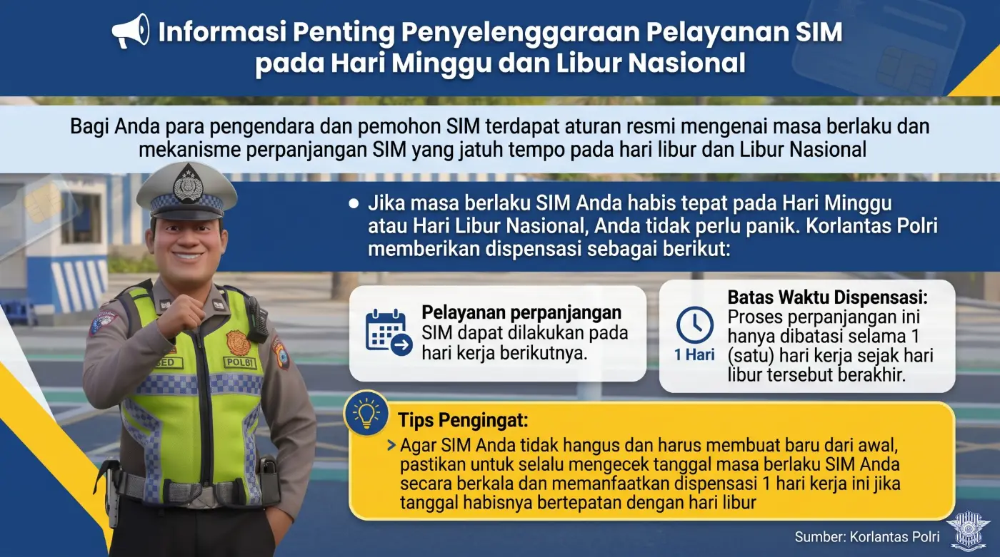
Jika masa berlaku SIM Anda habis tepat pada Hari Minggu atau Hari Libur Nasional, Anda tidak perlu panik. Korlantas Polri memberikan dispensasi sebagai berikut:
📅 Pelayanan perpanjangan
SIM dapat diperpanjang pada hari kerja berikutnya.
⏱ Batas waktu dispensasi
Hanya 1 (satu) hari kerja sejak hari libur tersebut berakhir.
Persyaratan E-Rikkes dan E-PPSI
Kesehatan jasmani (E-RIKKES) dan kesehatan rohani (E-PPSI) — berlaku sejak 1 Januari 2024.
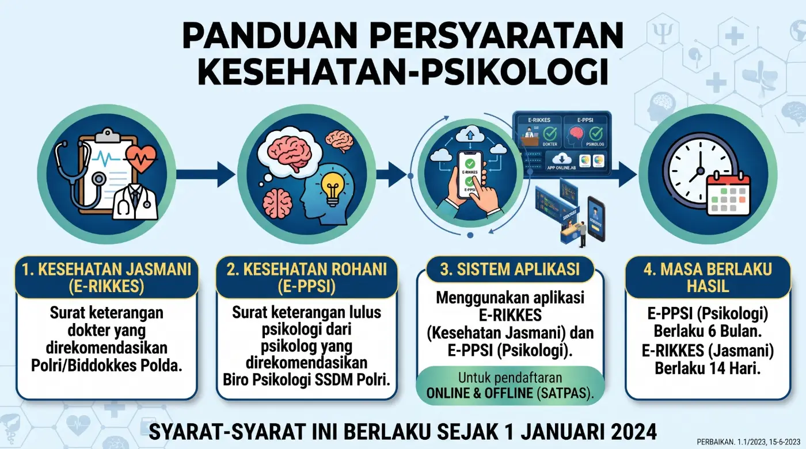
Kesehatan Jasmani (E-RIKKES)
Surat keterangan dokter yang direkomendasikan Polri/Biddokkes Polda.
Kesehatan Rohani (E-PPSI)
Surat keterangan lulus psikologi dari psikolog yang direkomendasikan Biro Psikologi SSDM Polri.
Sistem Aplikasi
Menggunakan aplikasi E-RIKKES dan E-PPSI, untuk pendaftaran online & offline (Satpas).
Masa Berlaku Hasil
E-PPSI (psikologi) 6 bulan. E-RIKKES (jasmani) 14 hari.
Rincian menurut Perpol
| Aspek | Kesehatan Jasmani | Kesehatan Rohani |
|---|---|---|
| Yang diperiksa | Penglihatan, pendengaran, fisik anggota gerak & perawakan fisik lain | Kemampuan kognitif, psikomotorik, dan kepribadian |
| Pemeriksa | Dokter Polri atau dokter umum yang direkomendasikan Pusdokkes Polri / Biddokkes Polda | Psikolog Polri atau psikolog di luar Polri yang direkomendasikan Biro Psikologi SSDM Polri |
| Bukti | Surat keterangan dokter | Surat keterangan lulus tes psikologi |
| Masa berlaku | 14 hari | 6 bulan |
| Pendataan | Hasil direkam dalam pangkalan data sebagai bagian basis data SIM Korlantas Polri (ketentuan baru Perpol 2/2023) | |
| Dasar | Pasal 11 | Pasal 12 |
Suara Anda Membangun Kami
Rangkuman saluran resmi pengaduan, kritik, dan saran.
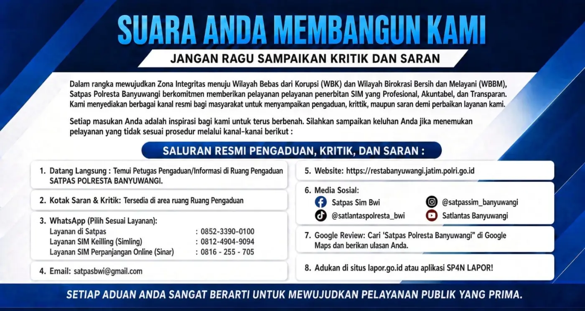
Dalam rangka mewujudkan Zona Integritas menuju Wilayah Bebas dari Korupsi (WBK) dan Wilayah Birokrasi Bersih dan Melayani (WBBM), Satpas Polresta Banyuwangi berkomitmen memberikan pelayanan penerbitan SIM yang profesional, akuntabel, dan transparan.
Datang langsung
Temui petugas pengaduan/informasi di Ruang Pengaduan Satpas Polresta Banyuwangi.
Kotak saran & kritik
Tersedia di area Ruang Pengaduan.
WhatsApp (pilih sesuai layanan)
Layanan di Satpas: 0852-3390-0100
SIM Keliling (Simling): 0812-4904-9094
Perpanjangan Online (SINAR): 0816-255-705
Media sosial
Facebook: Satpas Sim Bwi
Instagram: @satpassim_banyuwangi
TikTok: @satlantaspolresta_bwi
YouTube: Satlantas Banyuwangi
Google Review
Cari “Satpas Polresta Banyuwangi” di Google Maps dan berikan ulasan Anda.
SP4N LAPOR!
Adukan di situs lapor.go.id atau aplikasi SP4N LAPOR!
Mekanisme Pengaduan
Ada keluhan? Jangan ragu, laporkan! Kami siap merespon.
Demi mewujudkan pelayanan yang transparan dan akuntabel, kami mengajak Anda untuk tidak ragu menyampaikan kritik, saran, maupun pengaduan. Ikuti langkah mudahnya dan bantu kami untuk terus berbenah menjadi lebih baik.
- Datang ke kantor Satpas, atau melapor melalui layanan WhatsApp & media resmi kami.
- Sampaikan keluhan atau masalah yang dialami.
- Sertakan bukti/lampiran pendukung (foto, dokumen, dll.).
- Tunjukkan identitas diri (KTP/kartu identitas lainnya).
- Ceritakan kronologi kejadian dengan jelas.
- Menerima laporan pengaduan dari masyarakat dengan ramah.
- Mencatat semua detail pengaduan dalam formulir/buku laporan.
- Mengecek kebenaran informasi yang diberikan.
- Menanyakan hal-hal yang kurang jelas untuk klarifikasi.
- Memberikan nomor atau tanda bukti pengaduan kepada pemohon.
- Meneruskan pengaduan ke bagian/unit kerja yang berwenang.
- Melakukan investigasi atau pemeriksaan lebih lanjut.
- Mengambil tindakan perbaikan sesuai hasil pemeriksaan.
- Memberikan jawaban atau solusi kepada pemohon.
- Melaporkan hasil penanganan pengaduan.
Catatan penting untuk masyarakat
Jika ada kendala dalam proses pengaduan, silakan hubungi petugas atau bagian informasi untuk bantuan lebih lanjut. Semua pengaduan akan diproses sesuai prosedur dan mendapatkan tindak lanjut dari petugas Satpas Polresta Banyuwangi. Terima kasih atas partisipasi Anda dalam meningkatkan pelayanan kami!
Jobdes Kelompok Kerja (Pokja) Satpas
Alur & tugas unit pelayanan penerbitan SIM sesuai Perpol No. 5/2021 & Perpol No. 2/2023.
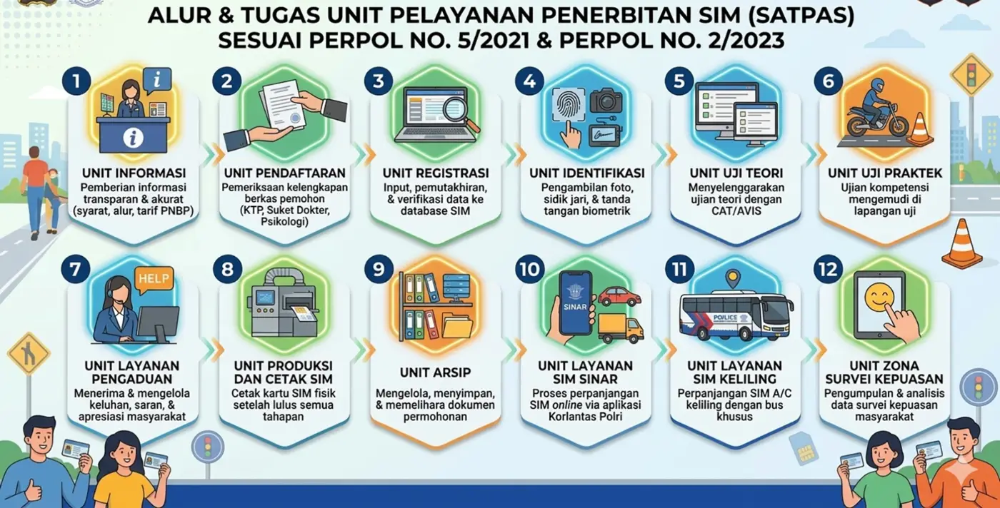
12 unit pelayanan Satpas
Tugas kelompok kerja menurut Perpol (Pasal 22–26)
Pokja Pendaftaran Pasal 22
- Menerima permohonan dan memeriksa dokumen permohonan penerbitan SIM.
- Memasukkan NIK sesuai KTP atau data identitas sesuai dokumen keimigrasian (manual/elektronik).
- Memberitahu pemohon untuk melengkapi dokumen bila ada kekurangan.
- Membubuhkan paraf pada formulir manual atau memverifikasi pendaftaran elektronik.
- Memasukkan data pemohon secara manual atau elektronik.
- Memberikan tanda bukti pendaftaran untuk mengikuti ujian teori, simulator, dan praktik.
- Menghimpun dokumen yang lengkap dan menyerahkannya ke pokja pengarsipan.
- Membuat surat keterangan pengembalian PNBP bagi pemohon yang tidak lulus ujian atau membatalkan sebelum tahap pengujian.
Pokja Identifikasi Pasal 23
- Menerima dan menyerahkan kembali tanda bukti pendaftaran ke pemohon.
- Memverifikasi data pemohon secara manual atau elektronik.
- Mengambil foto, sidik jari, dan tanda tangan pemohon secara elektronik.
Pokja Pencerahan & Pengujian Pasal 24
Unit ujian teori: menerima tanda bukti pendaftaran → menjelaskan materi pencerahan & ujian teori → melaksanakan ujian teori elektronik → mengumumkan hasil → mengarahkan yang lulus ke unit simulator.
Unit ujian keterampilan (simulator): menerima tanda bukti → menjelaskan materi → melaksanakan ujian simulator → mengumumkan hasil → mengarahkan ke unit ujian praktik.
Unit ujian praktik: menerima tanda bukti → menjelaskan materi → memberi kesempatan uji coba → melaksanakan ujian praktik → mengumumkan hasil → mengarahkan yang lulus ke pencetakan & penyerahan SIM.
Pokja Pencetakan & Penyerahan Pasal 25
- Verifikasi data pemohon.
- Mencetak dan menyerahkan SIM sesuai jenis dan golongan.
- Menerima tanda bukti pendaftaran pemohon.
- Menyerahkan SIM kepada pemohon dan meminta bukti kepesertaan aktif JKN bagi yang belum menyerahkan saat pendaftaran (Perpol 2/2023).
Pokja Pengarsipan Pasal 26
- Menerima dokumen persyaratan dari pokja pendaftaran.
- Menata, menyimpan, memelihara, dan menyajikan arsip (manual dan/atau elektronik).
- Menyusun arsip: pemindahan, pemusnahan, dan penyerahan.
Layanan Penerbitan SIM SINAR
SIM Nasional Presisi — perpanjangan SIM secara online dari HP, tanpa perlu datang ke Satpas.
Perpanjang SIM dari rumah
Melalui aplikasi Digital Korlantas POLRI, pemohon dapat memperpanjang SIM, mengikuti tes kesehatan & psikologi secara daring, membayar PNBP, lalu menerima SIM baru melalui jasa pengiriman ke alamat rumah.
Persyaratan
- SIM lama masih berlaku (belum lewat tanggal habis).
- e-KTP asli untuk difoto/diunggah.
- Pas foto dan foto tanda tangan.
- Bukti kepesertaan aktif JKN/BPJS Kesehatan (Perpol 2/2023).
- HP Android/iOS dengan kamera dan internet.
- Email dan nomor HP aktif untuk verifikasi akun.
- Alamat pengiriman yang jelas dan lengkap.
- Dana PNBP perpanjangan + biaya tes online & pengiriman.
Langkah perpanjangan lewat SINAR
- Unduh aplikasi “Digital Korlantas POLRI”Tersedia di Google Play Store dan App Store. Pastikan pengembangnya resmi Korlantas Polri.
- Daftar akun & masukRegistrasi dengan email/nomor HP dan NIK, lalu pilih menu SINAR.
- Isi data & unggah dokumenFoto e-KTP, foto SIM lama, pas foto, dan tanda tangan sesuai petunjuk di layar.
- Tes kesehatan & psikologi onlineMengikuti pemeriksaan kesehatan jasmani (e-Rikkes) dan psikologi (e-PPsi) melalui aplikasi.
- Bayar PNBP & biaya kirimGunakan kode bayar (BRIVA) yang muncul di aplikasi. Simpan bukti pembayarannya.
- Verifikasi, cetak & kirimData diverifikasi petugas, SIM dicetak, lalu dikirim ke alamat Anda. Status dapat dipantau di aplikasi.
🆘 Bantuan SINAR di Banyuwangi
Mengalami kendala aplikasi? Hubungi:
Perkembangan penerbitan SIM melalui SINAR (2020 – September 2026)
Rekapitulasi penerbitan SIM perpanjangan online (SINAR) yang tercatat di Satpas Polresta Banyuwangi.
SIM A SIM C *2026: Januari–September
| Tahun | SIM A | SIM C | Total |
|---|---|---|---|
| 2020 | – | – | – |
| 2021 | 182 | 387 | 569 |
| 2022 | 704 | 2.347 | 3.051 |
| 2023 | 2.287 | 6.772 | 9.059 |
| 2024 | 3.675 | 10.439 | 14.114 |
| 2025 | 5.357 | 15.358 | 20.715 |
| 2026* | 3.360 | 8.750 | 12.110 |
| Jumlah | 15.565 | 44.053 | 59.618 |
Perbandingan tiga cara perpanjangan
| Aspek | Satpas Induk | SIM Jempol (Bus Keliling) | SINAR (Online) |
|---|---|---|---|
| Tempat | Gedung Satpas Polresta | Kecamatan, pusat keramaian, instansi | Dari HP di mana saja |
| Golongan | Semua golongan | SIM A & SIM C | SIM A & SIM C |
| Waktu proses | ± 30 menit | 10–15 menit | Menunggu verifikasi & pengiriman |
| SIM diterima | Langsung di loket | Langsung di bus | Dikirim ke alamat |
| Syarat utama | SIM lama masih berlaku · e-KTP · sehat jasmani & rohani · JKN aktif · PNBP sesuai PP 76/2020 | ||
Informasi umum aplikasi SINAR bersumber dari Korlantas Polri; tampilan dan alur di aplikasi dapat diperbarui sewaktu-waktu.
SIM JEMPOL (Jemput Bola)
Bus SIM Keliling hadir di kecamatan dan pusat keramaian untuk perpanjangan SIM A & C.
“Kami yang datang ke Anda”
Banyuwangi adalah kabupaten terluas di Pulau Jawa. Warga di pelosok dan pesisir bisa menempuh 40–70 km ke Satpas induk. SIM JEMPOL mengubah pola layanan dari menunggu pemohon datang menjadi menjemput kebutuhan masyarakat.
Persyaratan
| No | Dokumen | Ketentuan |
|---|---|---|
| 1 | SIM asli yang masih berlaku | Golongan A atau C, belum kedaluwarsa |
| 2 | e-KTP | Asli + 2 lembar fotokopi |
| 3 | Surat keterangan kesehatan jasmani | Dokter terdaftar Biddokkes Polri / e-Rikkes (tersedia di lokasi) |
| 4 | Surat keterangan psikologi | Lembaga psikologi terverifikasi / e-PPsi (tersedia di lokasi) |
| 5 | Kepesertaan aktif BPJS Kesehatan | Sesuai Perpol No. 2 Tahun 2023 |
Alur layanan di Bus SIM Keliling
Zona & titik lokasi layanan
| Zona | Kecamatan | Titik lokasi |
|---|---|---|
| I · Selatan | Genteng, Glenmore, Kalibaru, Pesanggaran, Siliragung | RTH Maron Genteng / Polsek Kalibaru / Pasar Pesanggaran |
| II · Utara | Wongsorejo, Kalipuro, Giri | Pasar Bajulmati Wongsorejo / Terminal Ketapang |
| III · Barat | Rogojampi, Singojuruh, Srono, Songgon | Taman Rogojampi / RTH Singojuruh / RTH Srono |
| IV · Pesisir/Tenggara | Muncar, Cluring, Purwoharjo, Tegaldlimo | Pelabuhan Muncar / Pasar Tegaldlimo |
📍 Jadwal dan titik lokasi dapat berubah.
Cek secara berkala informasi terbaru melalui:
Tarif PNBP (PP No. 76 Tahun 2020)
Biaya kesehatan dan psikologi dikelola penyedia layanan terakreditasi dan tidak termasuk PNBP.
Mengundang SIM JEMPOL ke instansi/komunitas
- Kirim surat permohonanDitujukan kepada Kapolresta Banyuwangi u.p. Kasat Lantas, paling lambat 7 hari kerja sebelum pelaksanaan.
- Lampirkan daftar pesertaMinimal 30 dan maksimal 150 pemohon perpanjangan SIM A/C per hari.
- Siapkan lokasiArea datar dan aman minimal 150 m², listrik cadangan 5.000–10.000 Watt, serta ruang tunggu beratap.
- Survei & penetapan jadwalUnit Regident Satlantas mengecek kelayakan lokasi dan mengonfirmasi tanggal pelayanan.
Sarana prasarana
Hasil pelayanan SIM Keliling per tahun (2020 – September 2026)
Rekapitulasi penerbitan SIM melalui SIM Keliling (Simling) Satpas Polresta Banyuwangi.
SIM A SIM C *2026: Januari–September
| Tahun | SIM A | SIM C | SIM D | Total |
|---|---|---|---|---|
| 2020 | – | – | – | – |
| 2021 | 2.211 | 6.575 | – | 8.786 |
| 2022 | 1.557 | 4.605 | – | 6.162 |
| 2023 | 963 | 2.438 | – | 3.401 |
| 2024 | 1.907 | 4.753 | – | 6.660 |
| 2025 | 1.546 | 3.247 | 2 | 4.795 |
| 2026* | 1.924 | 4.039 | 1 | 5.964 |
| Jumlah | 10.108 | 25.657 | 3 | 35.768 |
Tahun 2020 tidak tercatat penerbitan melalui SIM Keliling. Tertinggi pada 2021 (8.786 SIM). Hingga September 2026 tercatat 5.964 SIM.
Sebelum vs sesudah SIM JEMPOL
| Aspek | Sebelum | Sesudah |
|---|---|---|
| Jarak | Hingga 40–70 km ke Satpas induk | Layanan hadir di radius kecamatan |
| Waktu | Hingga setengah hari termasuk perjalanan | Selesai 10–15 menit di lokasi |
| Kepatuhan | Banyak SIM terlambat diperpanjang | Target kepatuhan naik > 35% di kecamatan penyangga |
| Kepuasan | Keluhan antrean di Satpas induk | IKM Sangat Baik (A), bebas calo |
LUPIS — Latihan Ujian Praktik SIM
Bimbingan dan coaching clinic uji teori & praktik SIM, 100% gratis.
Dari “kami menguji Anda” menjadi “kami membantu Anda belajar”
Banyak pemohon gagal ujian praktik bukan karena tidak bisa berkendara, melainkan karena gugup dan cemas di bawah pengawasan penguji. LUPIS menghadirkan latihan di lapangan ujian yang sebenarnya, didampingi penguji bersertifikat yang ramah, sabar, dan komunikatif.
Siapa yang boleh ikut?
- Berusia minimal 17 tahun.
- Memiliki e-KTP (atau kartu pelajar bagi pemohon pemula).
- Dapat membaca dan menulis huruf latin; penyandang disabilitas rungu/netra dibantu asistensi khusus.
- Pemohon yang belum lulus ujian teori/praktik di Satpas, atau
- Masyarakat/komunitas yang ingin berlatih sebelum mendaftar SIM.
- Pendaftaran 100% gratis.
Siklus belajar LUPIS
Kegagalan bukan akhir, tetapi langkah untuk memperbaiki diri. Manfaatkan LUPIS selama masa tunggu ujian ulang (paling banyak 2 kali dalam 14 hari kerja).
Jadwal & durasi (SOP)
🗓️ Jadwal latihan di Satpas
- Selasa–Jumat: 12.00–15.00 WIB
- Sabtu (sesi khusus): 09.00–11.30 WIB
⏱️ Durasi per sesi
- SIM C (sepeda motor): 30 menit
- SIM A (mobil): 30 menit
- SIM D (disabilitas): 30–45 menit
Tahapan coaching clinic
A. Registrasi & pencerahan teori (±15 menit)
Lapor ke loket LUPIS dengan bukti gagal ujian atau bukti registrasi, lalu dicatat di buku register. Materi pencerahan:
- Peraturan lalu lintas, hak utama pengguna jalan, rambu, marka, dan APILL.
- Etika berkendara, cara mendahului, dan batas kecepatan aman.
- Teknik pengereman darurat (kombinasi rem depan & belakang).
- P3K pada kecelakaan lalu lintas.
- Tips mengerjakan bank soal E-AVIS Korlantas Polri.
B. Latihan simulator pengemudi
Refleks terhadap lampu & bunyi
Estimasi jarak & waktu objek bergerak
Fokus pada dinamika lalu lintas
Reaksi & kewaspadaan dalam skenario jalan
Peserta yang belum mencapai target skor latihan langsung didampingi petugas untuk mengulang.
C. Latihan praktik lapangan
Drill cockpit (pengecekan awal): rem, kemudi, lampu, spion, ban, rantai/v-belt, helm SNI berbunyi “klik” (motor); tekanan ban, oli/rem, posisi duduk, spion, sabuk pengaman, transmisi netral (mobil).
🏍️ Sepeda motor (SIM C & D) — sirkuit huruf S
- Pengereman keseimbangan: 30 km/jam, berhenti stabil sebelum garis, kaki kiri turun, menoleh ke kanan belakang.
- Putar balik huruf U: jalur sempit, tanpa menurunkan kaki dan menyentuh patok.
- Lintasan huruf S: berkelok halus tanpa menginjak marka.
- Reaksi rem menghindar (cabang Y): 30 km/jam, rem di titik kuning, lepas di titik hijau, menghindar kiri/kanan sesuai isyarat.
🚗 Mobil (SIM A)
- Maju-mundur pada jalur sempit sejauh 50 meter.
- Slalom/zig-zag maju dan mundur tanpa menyentuh patok.
- Parkir paralel & seri di area terbatas.
- Tanjakan 15°: berhenti, rem tangan, lalu jalan kembali tanpa mundur/mati mesin.
Sarana latihan
LUPIS untuk komunitas/instansi (jemput bola)
Ajukan surat kepada Kapolresta Banyuwangi c.q. Kasat Lantas, peserta 30–150 orang per sesi, lampirkan daftar identitas peserta, sediakan lapangan rata minimal 200 m² dan sumber listrik yang memadai.
Dampak: produksi SIM per tahun
Laporan produksi penerbitan SIM Satpas Polresta Banyuwangi, periode 2020 – September 2026.
★ Tahun peluncuran LUPIS. *2026 sampai dengan September.
| Tahun | SIM A | SIM C | Jml baru | Peningkatan | Total |
|---|---|---|---|---|---|
| 2020 | 3.774 | 6.406 | 10.180 | 609 | 10.789 |
| 2021 | 2.951 | 4.991 | 7.942 | 721 | 8.663 |
| 2022 | 2.751 | 5.207 | 7.958 | 701 | 8.659 |
| 2023 | 3.708 | 5.723 | 9.431 | 620 | 10.051 |
| 2024 | 5.224 | 8.648 | 13.872 | 674 | 14.546 |
| 2025 | 2.705 | 4.498 | 7.203 | 660 | 7.863 |
| 2026* | 2.662 | 4.786 | 7.452 | 571 | 8.023 |
| Total | 23.775 | 40.259 | 64.038 | 4.556 | 68.594 |
Jumlah baru termasuk SIM CI, CII, D, dan DI (lihat rincian). Peningkatan = SIM A Umum, BI, BI Umum, BII, dan BII Umum.
Rincian per golongan SIM
| Tahun | A | C | CI | CII | D | DI | AU | BI | BIU | BII | BIIU |
|---|---|---|---|---|---|---|---|---|---|---|---|
| 2020 | 3.774 | 6.406 | – | – | – | – | 5 | 336 | 153 | 31 | 84 |
| 2021 | 2.951 | 4.991 | – | – | – | – | – | 413 | 174 | 41 | 93 |
| 2022 | 2.751 | 5.207 | – | – | – | – | 1 | 393 | 160 | 36 | 111 |
| 2023 | 3.708 | 5.723 | – | – | – | – | – | 357 | 144 | 38 | 81 |
| 2024 | 5.224 | 8.648 | – | – | – | – | – | 335 | 166 | 39 | 134 |
| 2025 | 2.705 | 4.498 | – | – | – | – | – | 274 | 175 | 38 | 173 |
| 2026* | 2.662 | 4.786 | 1 | – | 2 | 1 | 1 | 254 | 137 | 36 | 143 |
| Kategori | Sebelum (2020–2023) | Sesudah (2024–Sept 2026) | Catatan |
|---|---|---|---|
| SIM Baru | 35.511 | 28.527 | Naik +47,09% pada tahun peluncuran 2024 |
| Peningkatan SIM | 2.651 | 1.905 | Stabil ±570–700 per tahun |
| Total | 38.162 | 30.432 | Puncak tertinggi 2024: 14.546 SIM |
Akses latihan
Dulu hanya kursus swasta berbayar → kini latihan resmi, gratis, didampingi penguji.
Psikologis pemohon
Dulu ujian jadi momok → kini pemohon tenang dan percaya diri.
Bebas calo
Latihan transparan dan gratis mempersempit ruang gerak calo.
SIBABA — SIM Bersama Disabilitas
Layanan SIM D & DI yang inklusif, ramah, dan jemput bola bagi penyandang disabilitas.
Semua berhak berkendara secara legal
Penyandang disabilitas sebelumnya terkendala jarak ke Satpas, informasi yang minim, beban psikologis, dan ujian yang belum adaptif. Bersama Dinas Sosial, organisasi disabilitas, dan pendamping sebaya (peer support), SIBABA hadir menjemput dan mendampingi.
SIM D dan SIM DI
SIM D
Kendaraan bermotor khusus roda dua/tiga yang dimodifikasi sesuai ragam disabilitas (setara SIM C).
Baru Rp50.000 · Perpanjangan Rp30.000
SIM DI
Kendaraan bermotor khusus roda empat yang dimodifikasi (setara SIM A).
Baru Rp50.000 · Perpanjangan Rp30.000
Kelompok rentan yang mendapat layanan prioritas: penyandang disabilitas, lansia, ibu hamil, dan ibu menyusui.
Persyaratan
- Usia minimal 17 tahun.
- e-KTP asli yang masih berlaku.
- Surat keterangan dokter yang menerangkan kondisi fisik dan rekomendasi mengoperasikan kendaraan modifikasi.
- Surat keterangan lulus tes psikologi.
- Kendaraan modifikasi milik sendiri, atau menggunakan kendaraan modifikasi yang disediakan Satpas.
Empat tahapan SIBABA
Prosedur layanan di Satpas (SOP)
| Tahap | Kegiatan | Waktu |
|---|---|---|
| 1. Asistensi lobi | Disambut petugas pendamping, kursi roda/alat bantu bila perlu, antrean prioritas | 3 mnt |
| 2. Registrasi & verifikasi | Cek KTP, surat sehat, surat psikologi; input KA-SIM; cek golongan D/DI | 5 mnt |
| 3. Bayar PNBP | Loket bank terpadu tanpa antrean umum | 3 mnt |
| 4. Identifikasi & foto | Tinggi kamera & sensor sidik jari disesuaikan untuk pengguna kursi roda | 5 mnt |
| 5. Ujian teori (AVIS) | Pencerahan singkat; soal dibacakan audio / pendamping isyarat bila perlu; lulus nilai 70 | 15 mnt |
| 6. Uji praktik khusus | Cek kendaraan modifikasi; maju lurus 20 m; putar balik huruf U; berhenti tepat di garis | 15 mnt |
| 7. Cetak & serah SIM | Diserahkan di loket prioritas didampingi petugas | 4 mnt |
Fasilitas aksesibilitas Satpas
Penerbitan SIM D & DI per tahun
Laporan rekapitulasi penerbitan SIM D & DI, periode 2020 – 30 September 2026.
★ Sejak SIBABA (2024). *2026 sampai dengan 30 September. Rata-rata 11,3 SIM per tahun.
| Tahun | Baru D | Baru DI | Perpj. D | Perpj. DI | Total |
|---|---|---|---|---|---|
| 2020 | 5 | 0 | 0 | 0 | 5 |
| 2021 | 16 | 0 | 0 | 0 | 16 |
| 2022 | 0 | 0 | 2 | 1 | 3 |
| 2023 | 1 | 0 | 3 | 0 | 4 |
| 2024 | 15 | 0 | 4 | 0 | 19 |
| 2025 | 19 | 2 | 3 | 1 | 25 |
| 2026* | 3 | 1 | 3 | 0 | 7 |
| Jumlah | 59 | 3 | 15 | 2 | 79 |
| Indikator | Sebelum SIBABA | Sesudah SIBABA |
|---|---|---|
| Aksesibilitas | Terpusat di Satpas, sulit dijangkau dan mahal | Jemput bola ke sentra komunitas dan domisili |
| Informasi | Minim informasi syarat & alur SIM D/DI | Sosialisasi aktif bersama Dinsos & OMS disabilitas |
| Pendampingan | Tidak ada pendampingan khusus | Peer support & petugas terlatih |
| Biaya & waktu | Sewa armada, waktu berhari-hari | One-day service, hemat transportasi hingga 80% |
| Kepercayaan | Ragu dan kurang percaya diri | Merasa dihargai dan percaya diri berkendara legal |
Kanal pengaduan khusus kelompok rentan
💬 WhatsApp khusus
Layanan chat langsung dengan petugas (0852-3390-0100).
📮 Kotak saran & IKM inklusif
Di loket penyerahan SIM.
🌐 SP4N-LAPOR! & Dumas Presisi
Kanal pengaduan nasional.
Penerbitan SIM Internasional
International Driver’s License — diterbitkan oleh Korlantas Polri.
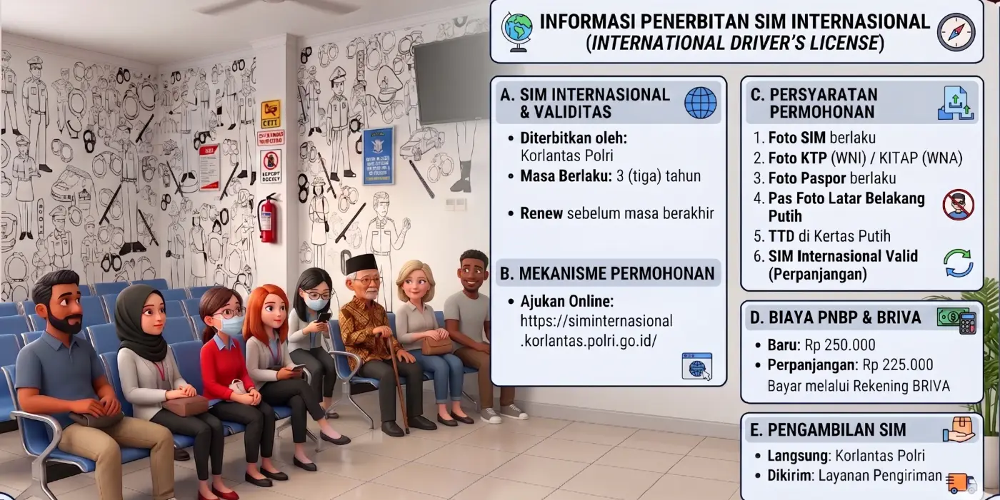
A. SIM Internasional & validitas
- Diterbitkan oleh: Korlantas Polri
- Masa berlaku: 3 (tiga) tahun
- Perpanjang sebelum masa berakhir
B. Mekanisme permohonan
Ajukan online:
siminternasional.korlantas.polri.go.id
D. Biaya PNBP & BRIVA
- Baru: Rp250.000
- Perpanjangan: Rp225.000
- Bayar melalui rekening BRIVA
C. Persyaratan permohonan
- Foto SIM yang berlaku
- Foto KTP (WNI) / KITAP (WNA)
- Foto paspor yang berlaku
- Pas foto latar belakang putih
- Tanda tangan di kertas putih
- SIM Internasional yang valid (perpanjangan)
E. Pengambilan SIM
- Langsung: di Korlantas Polri
- Dikirim: melalui layanan pengiriman
Perlu diketahui
- Syarat: sudah memiliki SIM perseorangan / umum Ps. 3 (10)
- SIM Internasional terbitan Indonesia hanya berlaku di luar negeri Ps. 3 (12)
Tahapan penerbitan (Pasal 20, 27–29)
Alur SIM Baru bagi WNA
Panduan persyaratan dan alur penerbitan SIM bagi Warga Negara Asing.
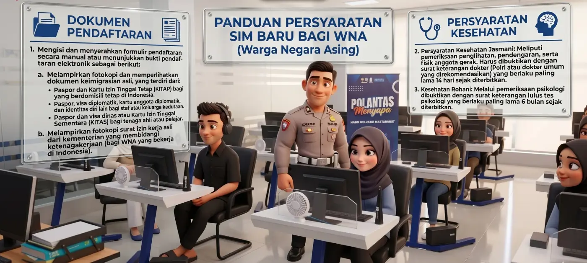
Dokumen keimigrasian yang diterima Pasal 9 ayat 2
Berdomisili tetap
Paspor + Kartu Izin Tinggal Tetap (KITAP).
Staf / keluarga kedutaan
Paspor, visa diplomatik, kartu anggota diplomatik, dan identitas diri lain.
Tenaga ahli / pelajar
Paspor + visa dinas atau Kartu Izin Tinggal Sementara (KITAS).
Alur pengurusan
- Siapkan dokumenIsi formulir pendaftaran (manual) atau tunjukkan bukti pendaftaran elektronik; lampirkan fotokopi & perlihatkan dokumen keimigrasian asli.
- Surat izin kerja (bagi WNA yang bekerja)Fotokopi surat izin kerja asli dari kementerian yang membidangi ketenagakerjaan.
- Pemeriksaan kesehatan jasmaniPenglihatan, pendengaran, fisik anggota gerak — surat dokter Polri/dokter umum yang direkomendasikan, berlaku paling lama 14 hari.
- Pemeriksaan psikologi (rohani)Surat keterangan lulus tes psikologi, berlaku paling lama 6 bulan.
- Pendaftaran & identifikasiVerifikasi data, perekaman biometrik (foto, sidik jari, tanda tangan).
- Pencerahan & ujian teoriMateri pengetahuan tersedia dalam bahasa Inggris bagi warga negara asing (Pasal 14 ayat 5).
- Ujian keterampilan (simulator) & ujian praktikSama seperti pemohon WNI.
- Pembayaran PNBP & cetak SIMBayar sesuai golongan, lalu SIM dicetak dan diserahkan.
Golongan SIM & Cek Usia Minimal
Kenali golongan SIM yang sesuai dengan kendaraan Anda.
| Golongan | Untuk mengemudikan | Usia min. |
|---|
Sumber: Pasal 3 ayat (2) & Pasal 8. Sejak Perpol 2/2023, setiap golongan termasuk kendaraan sejenis bertenaga listrik.
Tangga Peningkatan & Penurunan Golongan
Jalur naik/turun golongan SIM menurut Pasal 6 ayat (4) dan (5).
Setiap kenaikan mensyaratkan SIM sebelumnya telah digunakan selama 12 bulan (Pasal 3 ayat 3–9).
Kalkulator Biaya PNBP
Hitung biaya resmi sebelum datang ke Satpas — bayar sesuai tarif, tolak pungli.
- Biaya pemeriksaan kesehatan, psikologi, dan sertifikat/diklat mengemudi (berbeda-beda di setiap wilayah).
- Pembayaran PNBP hanya dilakukan di loket BRI / BRIVA — bukan kepada perorangan.
Masa Berlaku Dokumen & Pengingat SIM
Jangan sampai SIM atau dokumen persyaratan Anda kedaluwarsa.
| Dokumen | Masa berlaku | Dasar |
|---|---|---|
| SIM perseorangan & umum | 5 tahun sejak terbit | Ps. 4 (1) |
| SIM Internasional | 3 tahun sejak terbit | Ps. 4 (2) |
| Surat keterangan dokter (jasmani) | 14 hari | Ps. 11 (4) |
| Surat lulus tes psikologi (rohani) | 6 bulan | Ps. 12 (4) |
| Surat keterangan uji keterampilan (simulator) | 6 bulan | Ps. 16 (3) |
| Sertifikat diklat mengemudi | 6 bulan | Ps. 9 (3a) |
Simulator Poin Pelanggaran SIM
Penandaan SIM menurut Pasal 33–39: tiap pelanggaran & kecelakaan memiliki poin.
Contoh disederhanakan dari Pasal 35–36 Perpol 5/2021; nomor pasal merujuk pada UU No. 22 Tahun 2009 tentang LLAJ. Pencatatan poin dapat berubah setelah verifikasi putusan pengadilan (Ps. 41 ayat 3).
Checklist “Siap ke Satpas”
Centang dokumen yang sudah Anda siapkan agar tidak bolak-balik.
⏰ Datang pagi
Layanan 08.00–13.00 WIB. Datang lebih awal agar proses ±30–120 menit selesai tepat waktu.
👕 Berpakaian rapi
Akan ada pengambilan foto untuk kartu SIM.
📚 Belajar materi
Pelajari rambu, marka, dan tata cara berlalu lintas sebelum ujian teori.
Tanya Jawab Seputar SIM
Kuis Pemahaman
Uji pengetahuan Anda tentang layanan dan aturan SIM.
Glosarium
Istilah dan singkatan yang sering dijumpai dalam layanan SIM.
| Istilah | Arti |
|---|
Survei Kepuasan Masyarakat (IKM)
Khusus bagi pembaca Buku Digital Interaktif ini.
Hasil survei terkini
Isi survei
Penutup & Sumber
Terima kasih telah membaca.
SIM adalah bukti legitimasi kompetensi pengemudi. Dengan mengikuti proses resmi, Anda turut mewujudkan pelayanan publik yang bersih, transparan, dan akuntabel di Satpas Polresta Banyuwangi.
Sumber
- Peraturan Kepolisian Negara Republik Indonesia Nomor 5 Tahun 2021 tentang Penerbitan dan Penandaan Surat Izin Mengemudi (Berita Negara RI Tahun 2021 Nomor 160).
- Peraturan Kepolisian Negara Republik Indonesia Nomor 2 Tahun 2023 tentang Perubahan atas Perpol Nomor 5 Tahun 2021 (Berita Negara RI Tahun 2023 Nomor 160).
- Peraturan Pemerintah Nomor 76 Tahun 2020 tentang Jenis dan Tarif atas Jenis PNBP yang Berlaku pada Kepolisian Negara Republik Indonesia.
- Undang-Undang Nomor 22 Tahun 2009 tentang Lalu Lintas dan Angkutan Jalan.
- Materi informasi publik Satlantas Polresta Banyuwangi: standar pelayanan, maklumat, kode etik, jadwal pelayanan, dan saluran pengaduan.
- Informasi Korlantas Polri: layanan hari Minggu/libur nasional, SIM Internasional, dan aplikasi SINAR.
- Keputusan Kepala Korps Lalu Lintas Polri Nomor Kep/105/VIII/2023 tanggal 4 Agustus 2023 tentang Ketentuan Pelaksanaan Uji Praktik Penerbitan Surat Izin Mengemudi (SIM).
- Peraturan Menteri Perhubungan Nomor PM 13 Tahun 2014 tentang Rambu Lalu Lintas, PM 34 Tahun 2014 tentang Marka Jalan, dan PM 49 Tahun 2014 tentang Alat Pemberi Isyarat Lalu Lintas.
- Peraturan Menteri PAN-RB Nomor 14 Tahun 2017 tentang Pedoman Penyusunan Survei Kepuasan Masyarakat Unit Penyelenggara Pelayanan Publik.
- Pemberitaan media tentang penerapan sirkuit huruf S (Agustus 2023): detikOto, detikJogja, Kompas TV, Good News From Indonesia.
- Gambar tampak gedung, lapangan uji, dan denah lantai 1 dibuat dari model 3D gedung Satpas Polresta Banyuwangi.
Privasi: buku ini menghitung jumlah kunjungan per halaman dengan GoatCounter, tanpa cookie dan tanpa menyimpan data pribadi, untuk mengetahui materi yang paling dibutuhkan masyarakat. Pengaturan tampilan (ukuran huruf, tema) hanya disimpan di perangkat Anda.